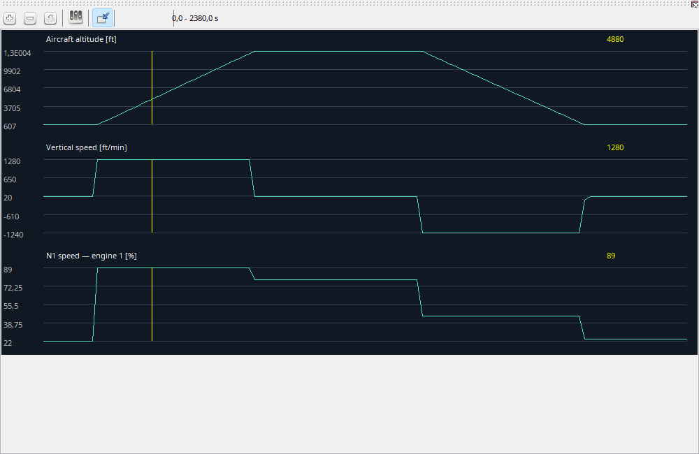

Choose parameters that answer the question: IAS, V/S and pitch for touchdown, or N1/EGT/FF for a power change. Showing every parameter at once is unnecessary. Configure the chart sequence in the selection dialog. Scales and display units affect presentation; the recording retains source measurements.
Charts plot parameters over recorded time; their cursor is synchronized with the workspace.
| Option / action | Behavior and limitations |
|---|---|
| Visible charts | Configure parameters and their order. Search the available list; the displayed list determines drawing sequence. |
| Zoom / pan | Zoom changes the time range, Pan moves within it and Full view restores the complete span. |
| Cursor | Hover seeks while paused. During playback it is disabled so accidental mouse movement does not interrupt time. |
| Units / enums | Captions include display units. Audited switch mappings show cockpit labels; unknown mappings stay numeric. Presentation conversions never rewrite samples. |
| Gaps | A missing line/value may mean unsupported or unrecorded data, not a measured zero. |
